Prayer
Prayer is trained by offering bones at the Altar on the Prayer page. Every monster drops bones of its tier, and better bones give more XP. Relics, the rare trophies some monsters drop, are offered in one long rite for a big lump of XP.
Burning Incense with each offering gives 25% more XP while it's switched on. The Reliquary offers bones the moment they drop for 50% of their XP, always leaving enough for 10 renewals of the blessings you keep up.
Altar
| Offering | Level | XP | Time | Kind |
|---|---|---|---|---|
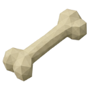 Bones | 1 | 14 | 3s | Bones |
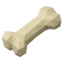 Big Bones | 15 | 20 | 3s | Bones |
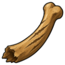 Beast Bones | 30 | 32 | 3s | Bones |
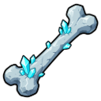 Deep Bones | 45 | 40 | 3s | Bones |
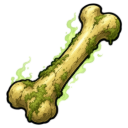 Grave Bones | 60 | 56 | 3s | Bones |
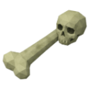 Lich Bones | 75 | 72 | 3s | Bones |
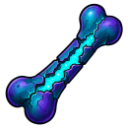 Void Bones | 90 | 96 | 3s | Bones |
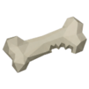 Chewed Bone | 15 | 300 | 45s | Relic |
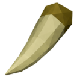 Rotted Fang | 30 | 640 | 1 min | Relic |
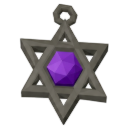 Warped Sigil | 45 | 1,200 | 1.5 min | Relic |
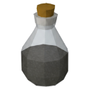 Grave-Ash Vial | 60 | 2,000 | 1.8 min | Relic |
Blessings
Blessings cost bones and boost a combat skill for 5 min, plus 30s for every 10 Prayer levels. They give no XP. One blessing per line can be active, and with auto-renew switched on a blessing is prayed again from your inventory the moment it runs out.
Ward
| Blessing | Level | Costs | Effect |
|---|---|---|---|
| Minor Ward | 1 | Bones ×5 | +2 🛡️ Defence |
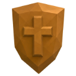 Lesser Ward | 15 | Big Bones ×4 | +4 🛡️ Defence |
| Greater Ward | 35 | Beast Bones ×3 | +6 🛡️ Defence |
| Sacred Ward | 60 | Grave Bones ×2 | +9 🛡️ Defence |
Focus
| Blessing | Level | Costs | Effect |
|---|---|---|---|
| Minor Focus | 1 | Bones ×5 | +2 ⚔️ Attack |
| Lesser Focus | 15 | Big Bones ×4 | +4 ⚔️ Attack |
| Greater Focus | 35 | Beast Bones ×3 | +6 ⚔️ Attack |
| Sacred Focus | 60 | Grave Bones ×2 | +9 ⚔️ Attack |
Vigor
| Blessing | Level | Costs | Effect |
|---|---|---|---|
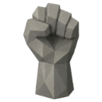 Minor Vigor | 1 | Bones ×5 | +2 💪 Strength |
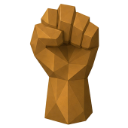 Lesser Vigor | 15 | Big Bones ×4 | +4 💪 Strength |
| Greater Vigor | 35 | Beast Bones ×3 | +6 💪 Strength |
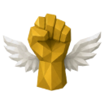 Sacred Vigor | 60 | Grave Bones ×2 | +9 💪 Strength |
Aim
| Blessing | Level | Costs | Effect |
|---|---|---|---|
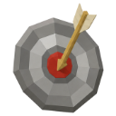 Minor Aim | 1 | Bones ×5 | +2 🏹 Marksmanship |
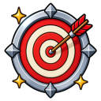 Lesser Aim | 15 | Big Bones ×4 | +4 🏹 Marksmanship |
| Greater Aim | 35 | Beast Bones ×3 | +6 🏹 Marksmanship |
| Sacred Aim | 60 | Grave Bones ×2 | +9 🏹 Marksmanship |
Mind
| Blessing | Level | Costs | Effect |
|---|---|---|---|
| Minor Mind | 1 | Bones ×5 | +2 🔮 Sorcery |
| Lesser Mind | 15 | Big Bones ×4 | +4 🔮 Sorcery |
| Greater Mind | 35 | Beast Bones ×3 | +6 🔮 Sorcery |
| Sacred Mind | 60 | Grave Bones ×2 | +9 🔮 Sorcery |